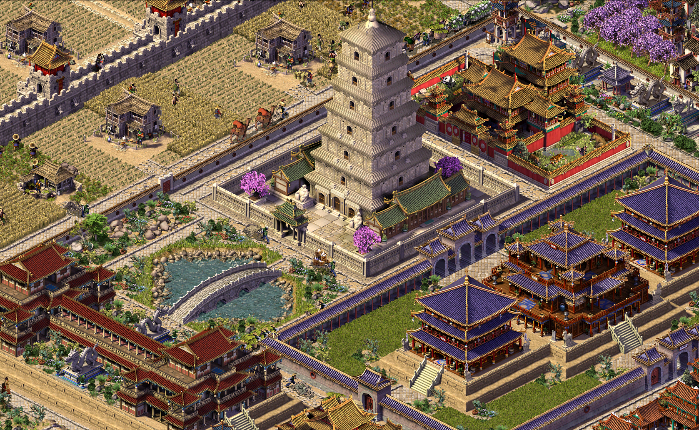

|

Emperor: Rise of the Middle Kingdom was one of my favourite games because of how you needed to be aware of
economy effects on your city
|
Design documentation
Lore documentation
Assets
|
|
Emperor of Eternity is strategy aimed to bring economy on its deserving place, without making it incredibly detailed
and nerdy. Taking inspirations from Sierra's "City Builders" series, Stronghold and 0 A.D., I wanted to see the game that brings
cultural aspects to the extreme - offering massive map with many civilisations, their complicated diplomatic connections and
cities that would each have their own struggles to fight against.
The game would try to focus primarily on city economics and interactions, allowing you to build empire on more than one city,
with customisable automation of processes whenever you find need.
I wasn't really keen on Emperor's battles, so this aspect of game would definitely be improved and closer to military games.
Despite that, the game would be rather peaceful, especially if you decide to keep good relations with your neighbours - I wanted
it to be just as interesting during tensions as with good times.
The core point of the game are civilisations - they would be shown through diverse architecture and variety in infrastructure,
as well as unique troops and resource management, including even distinct traditions and religion to care about.
This will let player be immersed and interested in the culture, making it both gameplay feature and the reason to get into each,
to learn their advantages and playing style.
Depending on decision whether to make smaller strategy before EoE, Emperor will take place in either West Moon or Seiteh - offering
large area with broad history and conflicts to delve into. Ultimately, the game will be developed until whole universe is playable,
ideally across all of its history.
Team
|